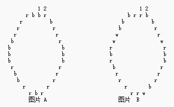

你有一条由 $N$ 个红色的，白色的，或蓝色的珠子组成的项链（$3 \le N \le 350$），珠子是随意安排的。 这里是 $n=29$ 的二个例子：

r 代表 红色的珠子
b 代表 蓝色的珠子
w 代表 白色的珠子
第一和第二个珠子在图片中已经被作记号。
图片 A 中的项链可以用下面的字符串表示：
brbrrrbbbrrrrrbrrbbrbbbbrrrrb
假如你要在一些点打破项链，展开成一条直线，然后从一端开始收集同颜色的珠子直到你遇到一个不同的颜色珠子，在另一端做同样的事（颜色可能与在这之前收集的不同）。 确定应该在哪里打破项链来收集到最大多数的数目的珠子。
例如，在图片 A 中的项链中，在珠子 9 和珠子 10 或珠子 24 和珠子 25 之间打断项链可以收集到 8 个珠子。
在一些项链中还包括白色的珠子（如图片 B） 所示。
当收集珠子的时候，一个被遇到的白色珠子可以被当做红色也可以被当做蓝色。
表现含有白珠项链的字符串将会包括三个符号 $r$ ， $b$ 和 $w$ 。
写一个程序来确定从一条被给出的项链可以收集到的最大珠子数目。
 Comet OJ
Comet OJ